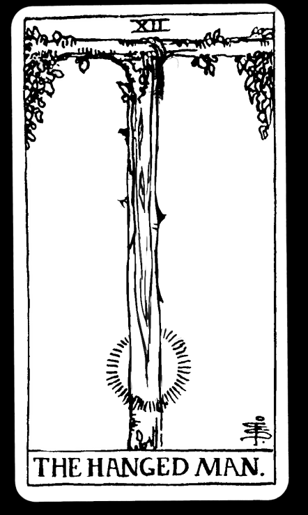

The Hanged Man is holding his hands behind his back in a way which forms an inverted triangle. His wearing of red pants are a representation of the physical body and human’s passion, while the blue that he wears in his shirt are representative of calm emotions, a color combination that is commonly seen in saints. His intellect is symbolized by the yellow color of his shoes, hair and halo. Around The Hanged Man’s head shines a halo. Upon first glance, The Hanged Man’s position seems precarious and something to be avoided. The halo however signifies that The Hanged Man is practicing something holy and that, instead of avoiding him, we should follow him.
The Hanged Man is bound to the cross by one foot. Being half bounded implies that the man is not totally dependent on the material world. His other foot is free to move around as it pleases. The Hanged Man’s bounding illustrates the need to live partially in the spiritual realm and partially in the material one; As above so below.
In this card, it depicts a man who is suspended upside-down, and he is hanging by his foot from the living world tree. It is believed that the hanging man is actually positioned there by his own free will. His right foot is bound to the branches, but his left foot remains perfectly free.